依 CRISP-DM 流程｜互動網頁：下拉選單切換兩種問題、使用者可自行更換資料來源
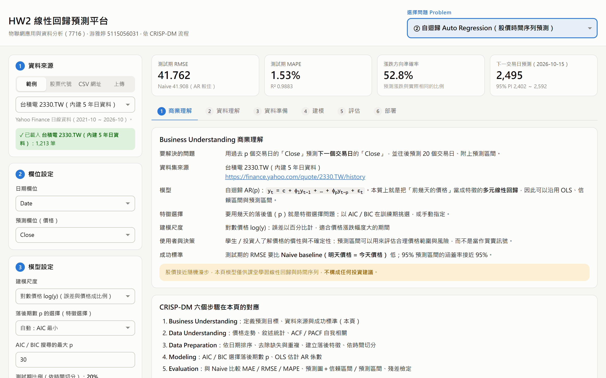
本作業製作一個可直接部署的互動式線性回歸預測平台：頁首下拉選單可切換「① 多元線性回歸」與「② 自迴歸 Auto Regression」兩種問題，使用者可用範例資料、股票代號、任意 CSV 網址或上傳檔案更換資料來源，所有統計計算都在瀏覽器中完成，並部署於 Vercel 與 GitHub Pages。
本報告以問題 ② 為主：以台積電（2330.TW）1,213 個交易日的收盤價，依 CRISP-DM 建立 AR(p) 模型。以 AIC／BIC 選擇落後期數（特徵選擇）得到 AR(1)，估計係數 φ₁ = 1.0006，顯示股價接近隨機漫步。測試期（2025-10-14 ～ 2026-10-14，243 天）一步預測 RMSE = 41.762，略優於 Naive 基準的 41.908；改用對數價格建模後，95% 預測區間的實際涵蓋率從 63.8% 提升到 94.2%。
| 作業要求 | 本作業的做法 | 報告位置 |
|---|---|---|
| 加分 +1：下拉視窗呈現兩種 problem | 頁首「選擇問題 Problem」：① 多元線性回歸、② 自迴歸 Auto Regression | 第二章、圖 1 |
| 加分 +2：可任意輸入 Dataset | 範例資料／股票代號／任意 CSV 網址／上傳檔案；50_Startups 網址實測 | 第四章 |
| 線性回歸：單純、多元或 Auto Regression | 主體為 AR(p)（以落後值為特徵的多元線性回歸）；問題 ① 為 MLR | 第三章、第五章 |
| Kaggle 資料集、特徵 > 13、標示來源 | 問題 ①：Kaggle Predict the Flood，20 個特徵，附連結 | 第五章 |
| 特徵選擇 Feature Selection | AR：以 AIC／BIC 選擇落後期數 p；MLR：4 種方法＋CV | 3.4 節 |
| 模型評估 Model Evaluation | MAE、MSE、RMSE、MAPE、R²、方向準確率、Ljung-Box；與 Naive 比較 | 3.5 節 |
| 預測圖＋信賴區間或預測區間 | 測試期一步預測＋95% CI／PI；未來 20 日預測＋95% PI | 圖 13、14、18 |
| CRISP-DM 六步驟 | 網頁六個分頁；本報告第三章逐步說明 | 第三章 |
| GitHub + web | https://github.com/jua91352/AIoT-HW2-Regression https://aiot-hw2-regression.vercel.app | 3.6 節 |
| NotebookLM 摘要、GPT 輔助內容 | 股價預測摘要（第七章）、洪水預測摘要（5.1 節）；GPT 輔助內容（第八章）；AI 對話紀錄 PDF 另行上傳 | 第七、八章、5.1 節 |
網頁分成三個區塊：頁首右側是問題下拉選單；左側是資料來源、欄位設定、模型設定；主畫面依 CRISP-DM 分成六個分頁，最上方的指標卡顯示測試期 RMSE、MAPE、漲跌方向準確率與下一交易日預測。
多元線性回歸（問題 ①）已於 DIC2 繳交過一個版本，本報告只在第五章簡述，主體為自迴歸。
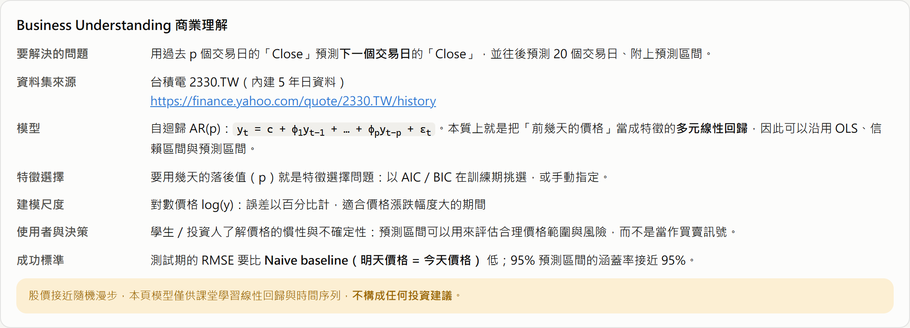
/api/stock 下載並內建於網站。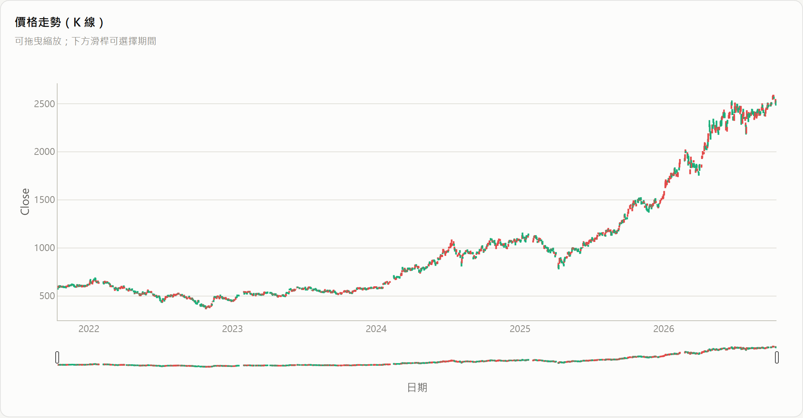
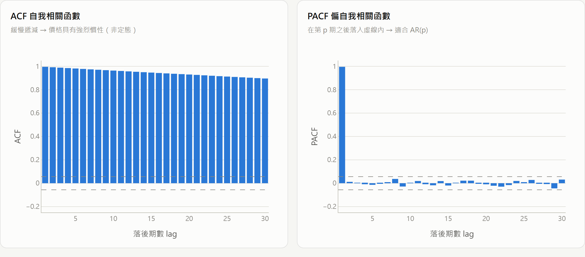
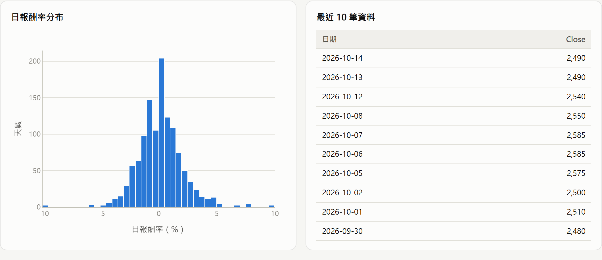
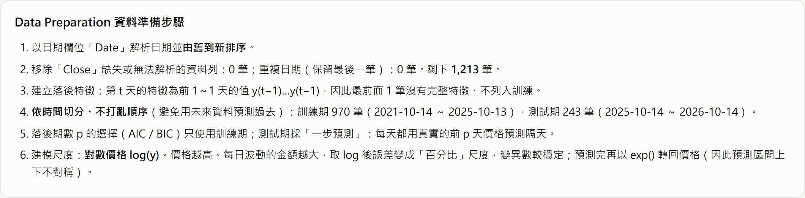
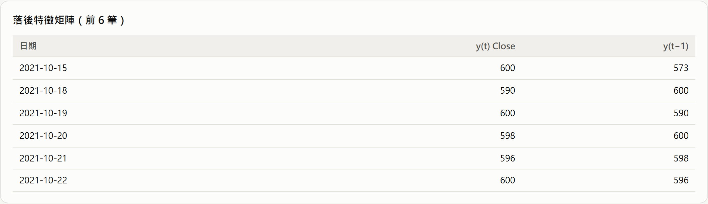
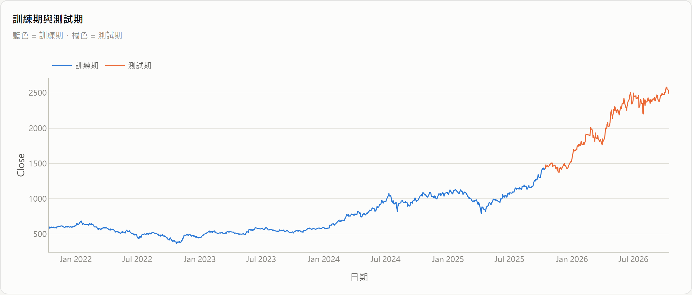
特徵選擇＝選擇落後期數 p。在訓練期對 p = 1～30 分別配適 AR(p)，使用相同的樣本區間比較 AIC 與 BIC。對數尺度下 AIC 與 BIC 都在 p = 1 最小；原始價格尺度下 AIC 選 p = 10、BIC 選 p = 1。BIC 懲罰較重、偏好簡單模型；兩種尺度的 BIC 都支持 AR(1)。
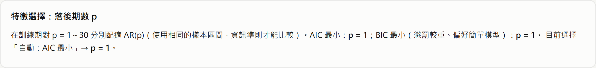
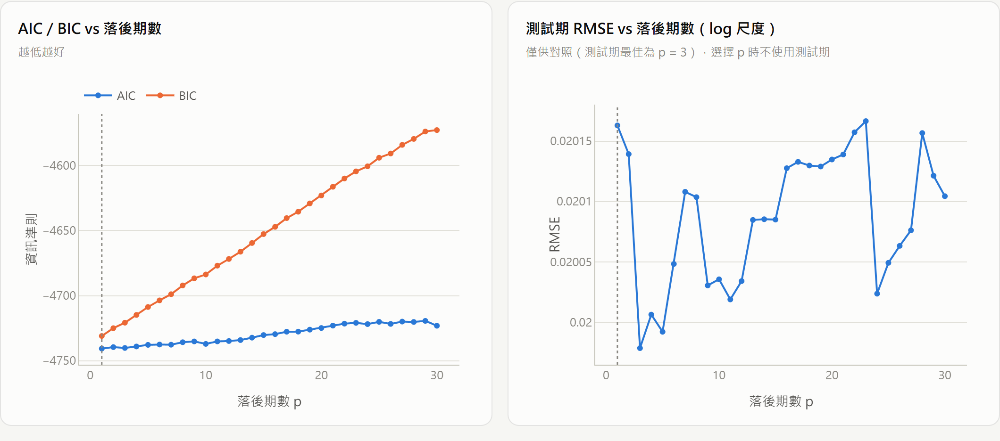
AR(1) 估計結果（訓練期，對數價格）：
| 變數 | 係數 | 標準誤 | t 值 | p 值 | 95% CI 下限 | 95% CI 上限 |
|---|---|---|---|---|---|---|
| 截距 const | -0.003016 | 0.012497 | -0.24 | 0.8094 | -0.027541 | 0.021509 |
| log y(t−1) | 1.000604 | 0.001910 | 523.99 | < 1e-16 | 0.996857 | 1.004352 |
φ₁ = 1.0006（95% CI 0.9969 ～ 1.0044，涵蓋 1），截距不顯著（p = 0.8094）。這表示 log 價格幾乎是「昨天的值 + 隨機誤差」，也就是隨機漫步；殘差標準差 σ = 0.0192，相當於每日約 1.92% 的波動。訓練期 R² = 0.9965 很高，是因為價格水準本身的慣性，不代表能預測漲跌。
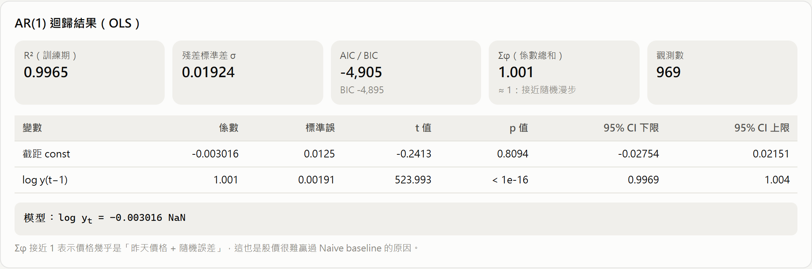
測試期採「一步預測」：每天都用真實的前 p 天價格預測隔天，與 Naive 基準比較，並列出原始價格尺度的 AR(10) 作為對照。
| 指標 | AR(1)，對數價格（採用） | Naive（明天 = 今天） | AR(10)，原始價格 |
|---|---|---|---|
| MAE | 30.858 | 30.802 | 30.395 |
| MSE | 1,744 | 1,756 | 1,701 |
| RMSE | 41.762 | 41.908 | 41.247 |
| MAPE | 1.53% | 1.53% | 1.51% |
| R² | 0.9883 | 0.9882 | 0.9886 |
| 漲跌方向準確率 | 52.8% | — | 58.5% |
| 95% 預測區間涵蓋率 | 94.2% | — | 63.8% |
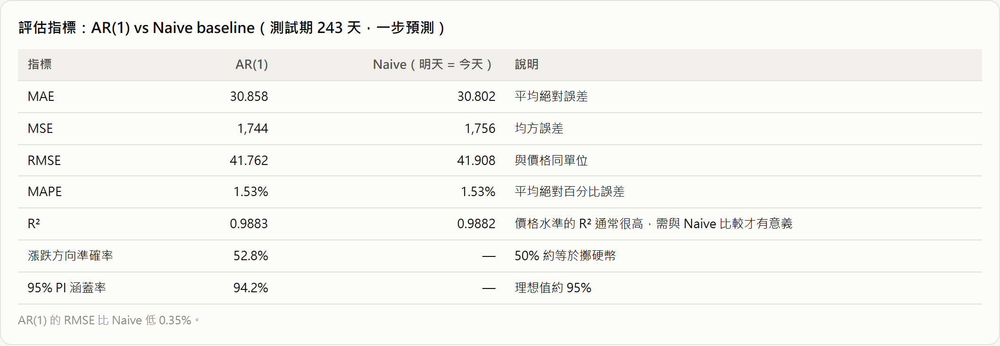
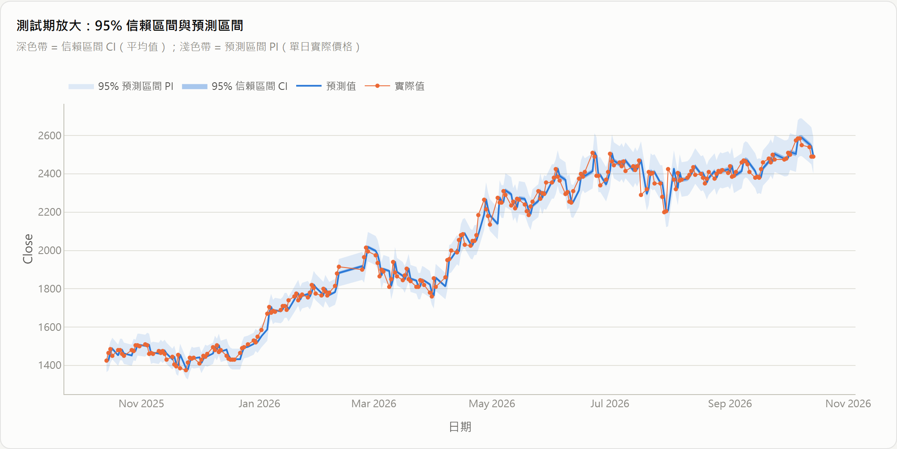
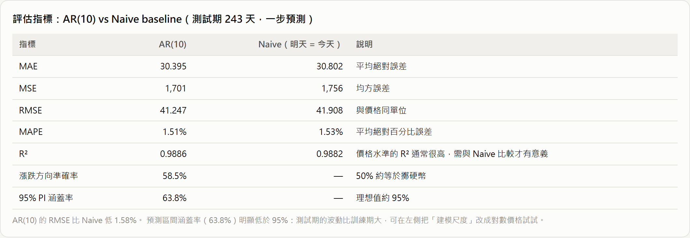
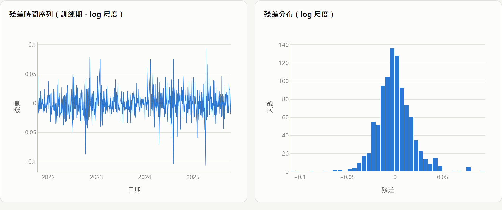
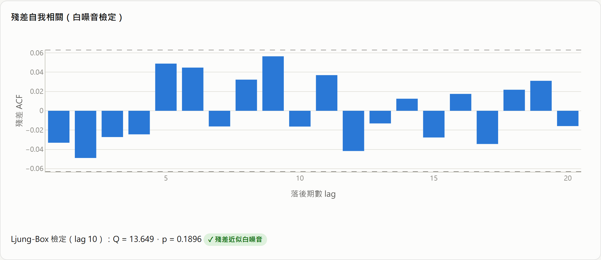
以全部資料重新估計 AR(1) 後遞迴預測未來 20 個交易日。第 2 天以後要用預測值當作落後值，誤差會累積，因此預測區間越來越寬。內建資料到 2026-10-14 為止，所以預測從下一個交易日開始；下表列出前 10 天，完整 20 天可在網頁下載 CSV。若在網頁用股票代號重新下載，會以最新資料預測。
| 日期 | 預測收盤價 | 95% PI 下限 | 95% PI 上限 |
|---|---|---|---|
| 2026-10-15 | 2,495.2 | 2,402.1 | 2,592.0 |
| 2026-10-16 | 2,500.4 | 2,369.4 | 2,638.7 |
| 2026-10-19 | 2,505.7 | 2,345.8 | 2,676.5 |
| 2026-10-20 | 2,510.9 | 2,326.7 | 2,709.7 |
| 2026-10-21 | 2,516.2 | 2,310.7 | 2,740.1 |
| 2026-10-22 | 2,521.5 | 2,296.7 | 2,768.3 |
| 2026-10-23 | 2,526.8 | 2,284.3 | 2,795.1 |
| 2026-10-26 | 2,532.1 | 2,273.1 | 2,820.7 |
| 2026-10-27 | 2,537.5 | 2,262.9 | 2,845.4 |
| 2026-10-28 | 2,542.8 | 2,253.6 | 2,869.2 |
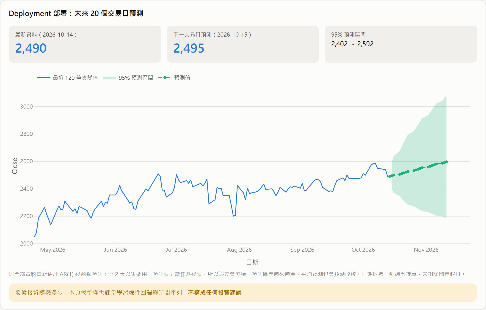
api/stock.js 代理 Yahoo Finance 股價；詳見 design.md。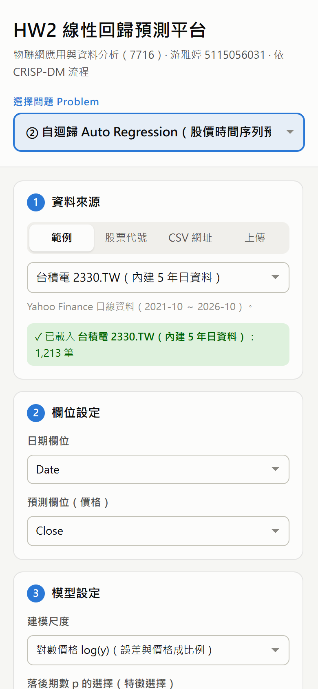
使用者不需修改程式，就能在側邊欄更換資料來源：
| 方式 | 說明 | 示範 |
|---|---|---|
| 範例資料 | 台積電 2330.TW（內建）、Apple AAPL（plotly 公開資料） | 本報告第三章 |
| 股票代號 | 輸入任何 Yahoo Finance 代號，台股加 .TW／.TWO，可選 1～10 年 | 元大台灣50 0050.TW（圖 20） |
| CSV 網址 | 任何含日期與數值欄位的公開 CSV；GitHub 頁面網址自動轉 raw | plotly finance-charts-apple.csv（圖 21） |
| 上傳檔案 | CSV 只在瀏覽器處理，不會上傳伺服器 | — |
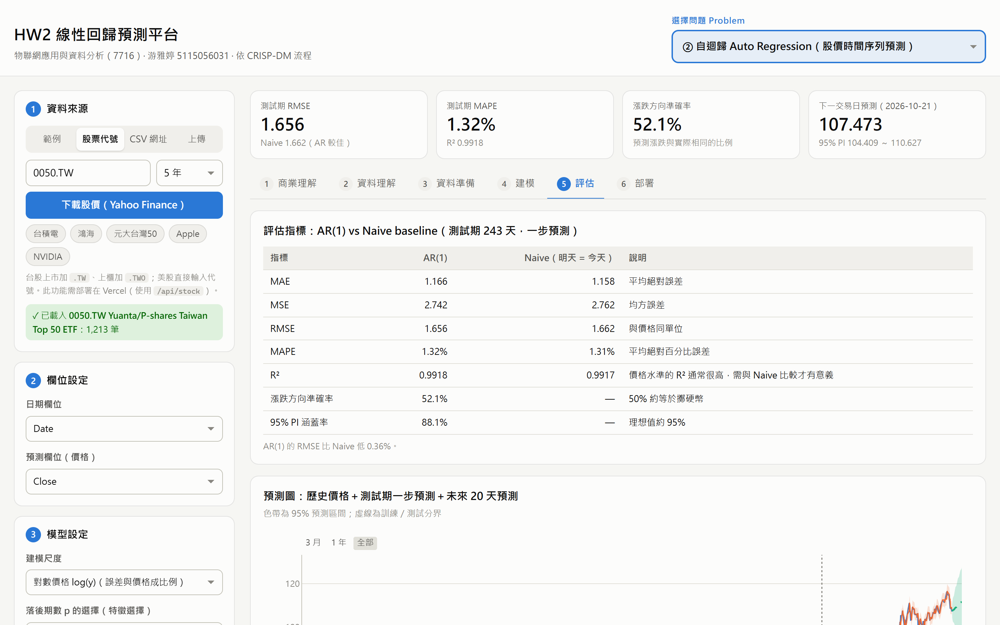
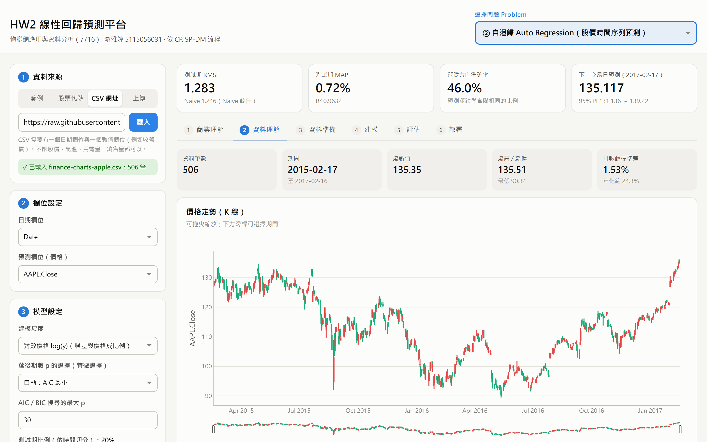
問題 ① 也可輸入任意 CSV 網址。以老師指定的 50_Startups 為例（圖 22），系統自動把 State 做 one-hot、以交叉驗證選出 2 個特徵（R&D Spend、Marketing Spend），測試集 R² = 0.9464；係數為 R&D Spend 0.8145、Marketing Spend 0.02474。
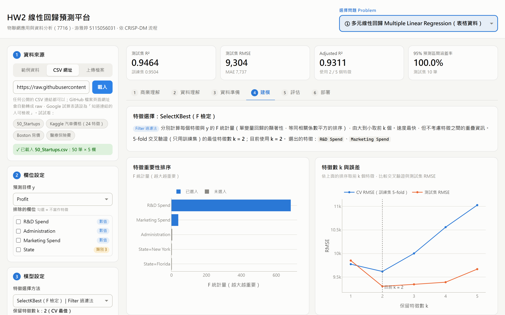
資料集為 Kaggle Playground Series S4E5「Predict the Flood」（https://www.kaggle.com/competitions/playground-series-s4e5），20 個洪水風險因子預測洪水機率，符合「特徵 > 13」的要求；網頁使用訓練集隨機抽樣 20,000 筆，訓練／測試 = 16,000／4,000。
| 特徵選擇方法 | 類型 | CV 最佳 k | 前 3 名特徵 | 計算時間 |
|---|---|---|---|---|
| SelectKBest（F 檢定） | Filter 過濾法 | 20 | TopographyDrainage、MonsoonIntensity、DamsQuality… | 15 ms |
| RFE 遞迴特徵消除 | Wrapper 包裝法 | 20 | TopographyDrainage、MonsoonIntensity、RiverManagement… | 49 ms |
| Forward Selection 前向逐步選擇 | Wrapper 包裝法 | 20 | TopographyDrainage、MonsoonIntensity、RiverManagement… | 56 ms |
| Lasso（L1 正則化） | Embedded 嵌入法 | 20 | TopographyDrainage、MonsoonIntensity、DamsQuality… | 39 ms |
四種方法都選出全部 20 個特徵：每個特徵與目標的相關係數都只有 0.162～0.197、標準化係數幾乎相同，缺一不可（只用 5 個特徵時測試 R² 僅 0.177）。OLS 測試集 R² = 0.8434、RMSE = 0.02003，95% 預測區間涵蓋率 94.75%。
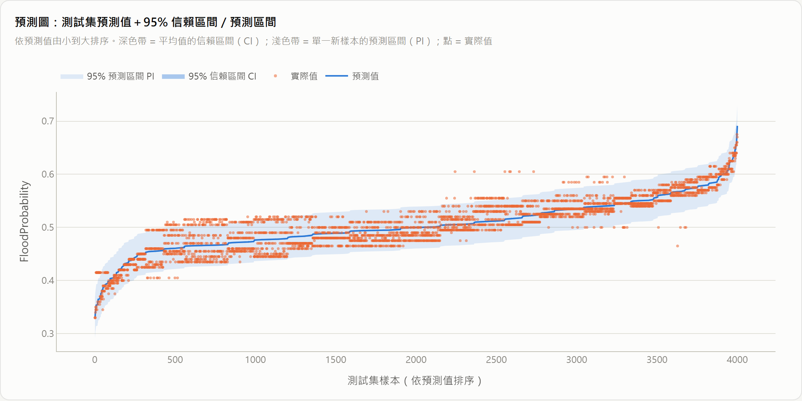
以 NotebookLM 研究網路上 Kaggle Playground Series S4E5（Predict the Flood）的同主題解法，摘要如下：
在 Kaggle S4E5 洪水預測競賽中，單純多元線性回歸展現出驚人的基準表現，因目標值主要由特徵總和決定，僅靠線性擬合即可達到 0.845 的 R² 分數，優於未經特徵工程的原始樹狀模型；但其限制在於無法捕捉細微的非線性殘差與交互作用，導致分數到達瓶頸。社群隨後發現此資料結構，開發出關鍵的列級特徵工程，包含計算特徵總和（fsum）、按數值大小對列特徵進行排序，以及計算列標準差、極值與高於閾值的特徵數量等統計量。
前幾名優勝解法進一步結合 CatBoost、XGBoost、LightGBM 與 AutoGluon 等多元模型，並利用 Ridge 或 Lasso 回歸對多組折外預測（OOF）進行加權集成，成功將 R² 分數提升至 0.869 以上。這給予使用多元線性回歸的學生重要啟示：線性模型是快速驗證全局規律與建立強大 Baseline 的優良起點，但若要達到極致預測精度，仍需深入進行 EDA，結合列統計特徵開發與多模型集成，才能補足單一線性模型的侷限。
| 方法 | 做法 | 與本作業的關係 |
|---|---|---|
| Naive／隨機漫步 | 明天價格 = 今天價格 | 股價預測的標準基準；本作業 AR(1) 只略優於它 |
| AR／ARIMA（Box-Jenkins） | 以落後值（及差分、移動平均項）建模 | 本作業採用 AR(p)，以 AIC／BIC 選階數 |
| GARCH 類模型 | 讓誤差變異數隨時間變化 | 可改善波動度變大時預測區間偏窄的問題（3.5 節） |
| 機器學習（LSTM、XGBoost 等） | 以大量技術指標或序列特徵訓練非線性模型 | 網路上常見，但樣本外常難以穩定贏過 Naive；超出「線性回歸」範圍 |
本作業的結果（φ₁ ≈ 1、RMSE 與 Naive 幾乎相同）與效率市場假說的看法一致：只用過去價格很難預測明天的漲跌；線性模型的價值在於提供可解釋的基準與合理的預測區間。
| 模型 | 類型 | R² |
|---|---|---|
| 本平台：MLR（OLS，瀏覽器，抽樣 20,000 筆） | 線性 | 0.8434 |
| MLR（OLS，20 個特徵） | 線性 | 0.8449 |
| MLR + 列統計特徵工程 | 線性 | 0.8658 |
| HistGradientBoosting（原始特徵） | 樹模型 | 0.8355 |
| HistGradientBoosting + 特徵工程 | 樹模型 | 0.8689 |
| Kaggle 前幾名（CatBoost／XGBoost／LightGBM 集成） | 集成 | ≈ 0.869 |
Python 版數據取自 1014 版分析（Kaggle 全部 1,117,957 筆，20% holdout）。線性模型已達 0.845，加入列統計特徵或樹模型集成可再提升到約 0.869。
使用 NotebookLM 研究網路上以時間序列預測股價的同主題解法，請它比較主流方法、說明 AR 為何難以贏過 Naive，並給出建議。摘要如下（保留原文，只把公式改為一般寫法）：
以下為您整理的時間序列股價預測主流方法比較與分析摘要：
1. 主流預測方法比較
- Naive／隨機漫步基準：做法為假設明日股價等於今日股價 (Ŷt+1 = Yt)。優點是極簡且零參數，完全無過擬合風險；缺點是無法預測趨勢轉折或波幅。
- AR／ARIMA：利用歷史價格（自迴歸 AR）與殘差（移動平均 MA）捕獲線性規律。優點是理論完備、適合平穩序列；缺點是無法處理非線性動態，面對非平穩股價易退化。
- GARCH：針對條件變異數建模，專注於捕捉金融市場的「波動聚集（Volatility Clustering）」現象。優點是精準評估風險與波動度，缺點是其預測標的為波動率而非價格方向。
- LSTM (機器學習)：透過門控機制學習非線性長短期依賴。優點是擬合能力強；缺點是需要大量數據、容易過擬合高噪音股價、模型為黑盒子且常見預測滯後（Lagging）。
2. 為什麼 AR 很難贏過 Naive 基準？
根據效率市場假說（EMH），股價價格序列近似隨機漫步，其報酬率自相關性極低且高噪音。若直接對非平穩的原始股價建立 AR 模型，參數會趨近於 1，實際退化為 Naive 模型；若對差分後的平穩報酬率建模，由於信躁比極低，估計出的 AR 參數多為樣本雜訊（過擬合），使得樣本外（Out-of-Sample）預測誤差往往大於零參數的 Naive 基準。
3. 給用「線性回歸」預測股價學生的建議
- 切勿直接預測原始股價：原始股價是非平穩序列，直接做 OLS 迴歸會產生「偽迴歸（Spurious Regression）」及虛高 R² 的假象。
- 改為預測「報酬率」或「漲跌方向」：將數據轉換為平穩序列後，再結合技術指標或總體經濟特徵進行預測。
- 務必以 Naive Model 為對照組：採用滾動式樣本外驗證（Rolling Walk-Forward），並比較其 RMSE/MAE 是否真的擊敗簡單的 Naive Baseline。
| NotebookLM 摘要的論點 | 本作業的結果 |
|---|---|
| 對非平穩股價建立 AR 模型，參數會趨近 1、退化為 Naive | AR(1) 的 φ₁ = 1.0006（95% CI 0.9969 ～ 1.0044，涵蓋 1）；測試期 RMSE 41.762，與 Naive 的 41.908 幾乎相同，完全吻合。對數價格的一階差分就是報酬率，φ₁ ≈ 1 代表報酬率接近白噪音（Ljung-Box p = 0.190） |
| 直接預測原始股價會出現偽迴歸與虛高的 R² | 訓練期 R² = 0.9965、測試期 R² = 0.9883 都很高，但 Naive 的 R² 也有 0.9882；因此本報告以 Naive 為主要比較基準，不以 R² 判斷模型好壞 |
| GARCH 能捕捉「波動聚集」、評估風險 | 原始價格模型的 95% 預測區間涵蓋率只有 63.8%；改用對數價格後為 94.2%，但換成 0050.TW 仍只有約 88%，顯示波動度會隨時間改變，GARCH 類模型是下一步 |
| 務必以 Naive 為對照組，並採滾動式樣本外驗證 | 本作業已以 Naive 為對照組，並依時間切分、每天用真實歷史值做一步預測；尚未做多個起點的滾動驗證，列為未來改進 |
| 改為預測報酬率或漲跌方向 | 網頁已計算漲跌方向準確率（52.8%，接近擲硬幣）；以報酬率為目標並加入技術指標的模型列為未來改進 |
本作業使用 AI 助理 Claude Code（Anthropic Claude）協助完成。完整對話過程已匯出為 PDF（5115056031_hw2_AI對話紀錄.pdf），另行上傳至 iLearning。
| 項目 | 由誰決定／完成 |
|---|---|
| 作業需求解讀（讀取 iLearning 作業頁與 Notion 補充） | AI 讀取整理，學生確認 |
| 不使用 Streamlit，改為可部署到 GitHub／Vercel 的純前端網頁 | 學生決定 |
| 兩種 problem 的設計（多元線性回歸＋課堂教的股價自迴歸） | AI 提案，學生採用 |
| 統計核心、網頁介面、圖表、股價 API 的程式碼 | AI 撰寫 |
| 數值正確性驗證（與 Python statsmodels 對照） | AI 執行 |
| 部署方式（GitHub + Vercel）與 repo 名稱 | 學生決定 |
| 依最新作業需求複查、決定報告以自迴歸為主 | 學生決定 |
| 本報告書、design.md、資訊圖表 | AI 依網頁實際執行結果撰寫，學生審閱 |
統計方法全部以 JavaScript 自行實作，因此逐項與 Python statsmodels 對照：
| 項目 | 測試資料 | 結果 |
|---|---|---|
| AR(3) 係數與 5 步預測區間 | 台積電 2330.TW 收盤價 | 與 AutoReg(...).get_prediction() 一致 |
| OLS 係數、標準誤、p 值、R²、F、AIC、BIC | 50_Startups 全資料（含 State one-hot） | 完全一致 |
| 新資料點的信賴區間與預測區間 | 同上 | 一致（小數點後 3 位內） |
| Durbin-Watson、Jarque-Bera、Breusch-Pagan、RESET | 同上 | 一致 |